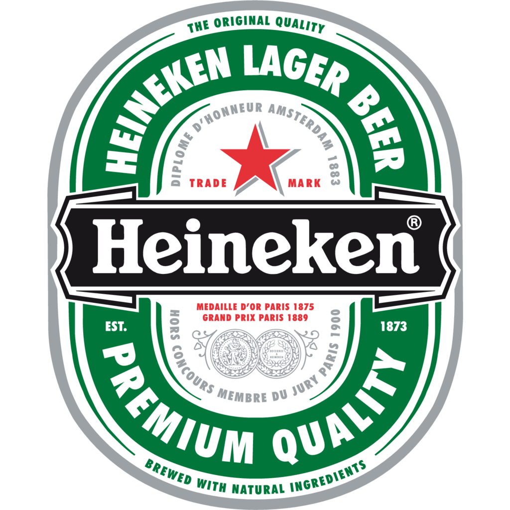
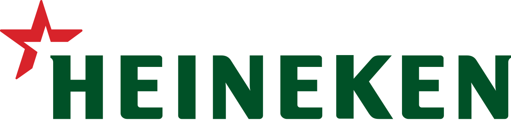
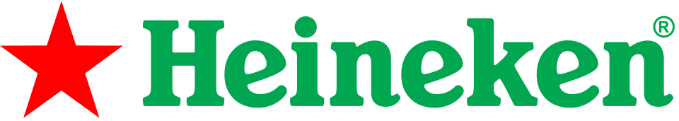
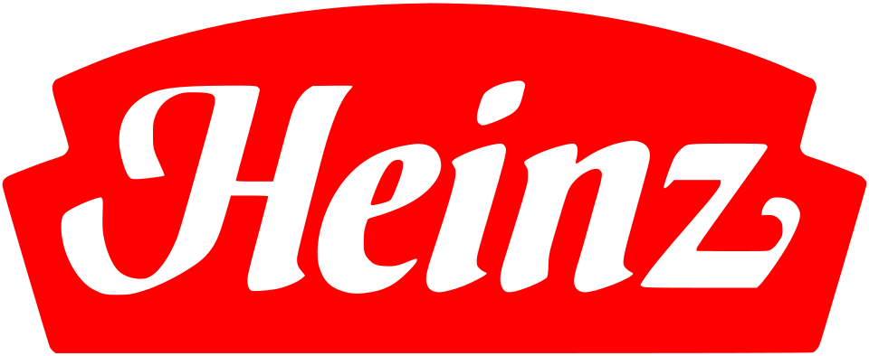

홈 > 브랜드 매거진 > 하이네켄
하이네켄
하이네켄(Heineken)은 1864년 네덜란드 암스테르담에서 창립된 하이네켄 N.V.의 플래그십 페일 라거 맥주 브랜드이다.
산업 분야 식음료 · 공개 등급 자료 기반 · 브랜드 평가 4.3 ★


한눈에 보는 브랜드
하이네켄은 1864년 헤라르트 하이네컨이 네덜란드 암스테르담의 양조장 '데 호이베르흐(건초더미)'를 인수하며 출발한 프리미엄 라거 맥주 브랜드다. 창업 초기부터 품질 관리 실험실을 둘 만큼 일관된 맛을 추구했고, 1886년 자체 개발한 'A효모'를 통해 은은한 과일 향과 균형 잡힌 풍미라는 고유의 맛을 완성했다.
오늘날 약 190개국에서 판매되며, 2016년 세계 최대 양조 기업 합병 이후 하이네켄은 글로벌 2위 양조사 지위를 지키고 있다. 그룹은 300개가 넘는 맥주·사이다 브랜드를 보유한 거대 주류 기업으로 성장했다.
브랜드 관점
하이네켄의 본질은 단일 글로벌 라거를 어디서나 같은 품질로 제공한다는 일관성에 있다. 세계 1위 AB인베브가 버드와이저·스텔라 등 다브랜드 포트폴리오로 규모를 키우고, 칼스버그가 유럽·아시아 거점 시장에 집중하는 것과 달리, 하이네켄은 녹색 병과 빨간 별이라는 단일 상징을 앞세워 '프리미엄 수입 라거'라는 포지션을 전 세계에서 동일하게 유지한다.
이 일관성이 하이네켄을 자국 시장이 아닌 곳에서도 고급 선택지로 각인시킨 핵심 자산이다. 또한 무알코올 시장에서 하이네켄 0.0을 선도 제품으로 키워, 음주 절제와 무알코올 수요 증가라는 흐름에 가장 먼저 올라탔다.
F1 글로벌 파트너십과 1990년대 초부터 이어온 유럽 클럽 축구 후원은 0.0을 운동·관람 상황의 책임 음주 아이콘으로 연결하는 전략적 무대다. 마케팅 예산의 최소 10분의 1을 책임 음주 메시지에 배정하는 점도 차별점이다.
한국에서는 하이네켄이 오랜 기간 대표적 수입 맥주로 자리해, 국내 소비자에게 '수입 프리미엄'의 기준점 역할을 해 왔다는 맥락이 중요하다.
시작과 성장
하이네켄의 뿌리는 1864년으로 거슬러 올라간다. 당시 헤라르트 하이네컨이 암스테르담의 양조장 '데 호이베르흐'를 사들여 타협 없는 프리미엄 라거 양조에 집중하면서 시작됐다.
1869년에는 바이에른 출신 숙련 양조가 빌헬름 펠트만을 영입해 하면발효 효모로 전환했고, 1873년 회사명을 '하이네컨 맥주 양조회사(HBM)'로 바꾼 뒤 1874년 로테르담에 제2 양조장 '오란여봄(오렌지 나무)'을 열었다. 1875년에는 비교적 작은 규모였음에도 국제 해양 박람회에서 금메달을 받으며 프랑스 최대 수출사로 떠올랐다.
결정적 전기는 1886년이었다. 로테르담 실험실의 하르토흐 엘리온이 순수 효모 균주를 배양해 훗날 'A효모'로 불리는 균주를 확립했고, 이 효모가 지금까지 하이네켄 특유의 맛을 지탱하는 핵심이 됐다.
이후 창업 가문은 1940년대 가족 지분을 되사들이고 1952년 지주회사를 세워 가족 경영 체제를 굳혔으며, 20세기 후반부터 아시아·태평양을 비롯한 세계 양조사를 차례로 인수하며 글로벌 그룹으로 확장했다.
브랜드 아이덴티티
하이네켄의 가치관은 '한 가지 위대한 맥주를, 세계 어디서나 동일하게'라는 신념으로 압축된다. 창업주 헤라르트가 갈색 병이 흔하던 시절 일부러 녹색 병을 택해 매대에서 돋보이게 한 것이 출발점이며, '하이네켄 그린'으로 불리는 이 녹색과 빨간 다섯 꼭짓점 별이 핵심 상징이다.
알프레트 하이네컨은 친근한 인상을 주기 위해 글자를 둥글게 다듬고 e를 살짝 뒤로 기울여, 마치 웃는 듯 보이는 '미소 짓는 e'를 만들었다. 1991년 도입된 현행 로고는 장식적 타원과 수상 문구를 걷어내고 이름과 별만 남겨 절제된 프리미엄 감각을 강조한다.
타깃은 품질과 글로벌 감성을 중시하는 성인 소비자이며, 보이스는 세련되고 자신감 있으면서도 유머와 책임 음주를 함께 담는다.
제품과 서비스
대표 제품은 1873년 이래 변함없는 레시피의 하이네켄 오리지널 라거로, 5도 안팎의 균형 잡힌 페일 라거다. 무알코올 라인인 하이네켄 0.0은 알코올 없이 본연의 맛을 구현해 책임 음주 흐름을 이끄는 전략 제품이며, 더 가볍고 청량한 하이네켄 실버가 젊은 음용층을 겨냥한다.
그룹 전체로는 암스텔, 타이거, 스트롱보우 사이다 등 300개 이상 브랜드를 함께 운영한다. 가격대는 대체로 일반 맥주보다 높은 프리미엄·수입 구간에 위치하며, 대형마트·편의점·음식점과 바, 스포츠 행사 현장 등 폭넓은 경로로 판매된다.
사람들
창업자: 헤라르트 아드리안 하이네켄(Gerard Adriaan Heineken)이 1864년 창업했다. 소유: 독립 상장사(하이네켄 N.V., 유로넥스트 암스테르담), 하이네켄 홀딩을 통해 가문이 지배한다.
현재 상태
하이네켄의 본사는 네덜란드 암스테르담에 있으며, 경영은 창업 가문이 세운 지주회사를 통해 안정적으로 지배되는 구조다. 창업주의 증손녀인 샤를린 드 카르발류-하이네컨이 가문 지분을 이끌며, 지주회사가 사업회사 의결권의 과반(약 50%)을 통제해 가족 경영 기조를 유지한다.
2024 회계연도 그룹 순매출은 약 298억 유로(IFRS 기준) 규모이며, 같은 해 영업이익이 두 자릿수 가까이 늘어 시장 기대를 웃돌았다. 한국 법인인 하이네켄코리아는 국내 수입 맥주 시장을 오래 주도해 왔으며, 최근 공시 기준 연 매출 약 750억원, 영업이익 약 213억원 수준으로 알려졌다.
다만 브랜드별 세부 매출 구성과 정확한 시장 점유율 등 일부 수치는 공식적으로 공개되지 않았다.
타임라인
BI/CI 변천사

대표 로고대표 브랜드 마크함께 읽을 브랜드
 식음료 · 편집 검수버드와이저
식음료 · 편집 검수버드와이저버드와이저(Budweiser)는 아돌푸스 부시가 1876년 출시한 미국의 아메리칸 라거 맥주 브랜드이다.
식음료 · 자료 기반하이트진로하이트진로(HiteJinro)는 참이슬 소주와 하이트·테라 맥주로 유명한 한국의 대표 주류 기업으로, 그 기원은 1924년으로 거슬러 올라간다.
TK
더본코리아
식음료 · 자료 기반더본코리아더본코리아는 백종원이 이끄는 한국의 외식 프랜차이즈 기업으로, 빽다방·홍콩반점·새마을식당·한신포차 등 다수의 외식 브랜드를 한 회사 안에서 운영한다. 가맹사업을 중심...
맥도날드는 가장 평범한 소비재를 세계 어디서나 읽히는 대중문화의 기호로 바꾼 브랜드다. 햄버거와 감자튀김은 단순한 메뉴지만, 맥도날드는 속도, 표준화, 접근성, 익숙...
 식음료 · 매거진 완성코카-콜라
식음료 · 매거진 완성코카-콜라코카-콜라는 음료의 맛보다 함께 마시는 순간의 감정을 브랜드 자산으로 축적해 왔다. 병의 형태, 색, 광고 언어, 공유의 장면이 반복되면서 제품은 탄산음료를 넘어 친...

식음료 · 편집 검수하인즈하인즈(Heinz)는 1869년 헨리 J. 하인즈가 미국 펜실베이니아주 샤프스버그에서 설립한 식품 회사로, 케첩을 비롯한 가공식품으로 유명하다. 2015년 크래프트...
 식음료 · 매거진 완성앱솔루트
식음료 · 매거진 완성앱솔루트앱솔루트는 보드카 병 하나를 광고와 예술의 반복 가능한 캔버스로 만든 브랜드다. 제품 형태의 일관성을 유지하면서도 캠페인마다 다른 문화적 해석을 입혀, 단순한 병을...
네슬레(Nestlé)는 스위스 브베에 본사를 둔 세계 최대 규모의 식음료 다국적 기업이다.